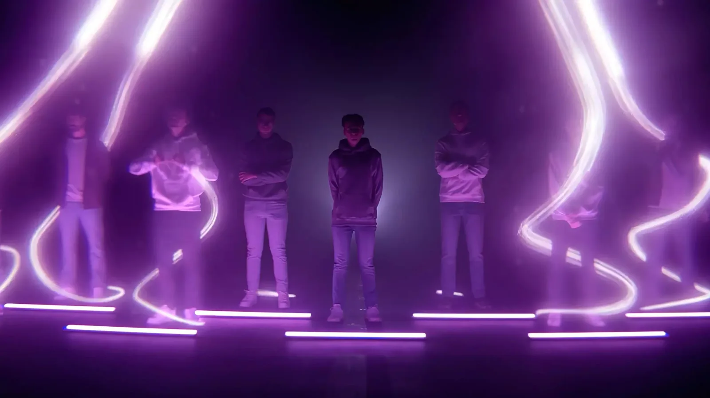
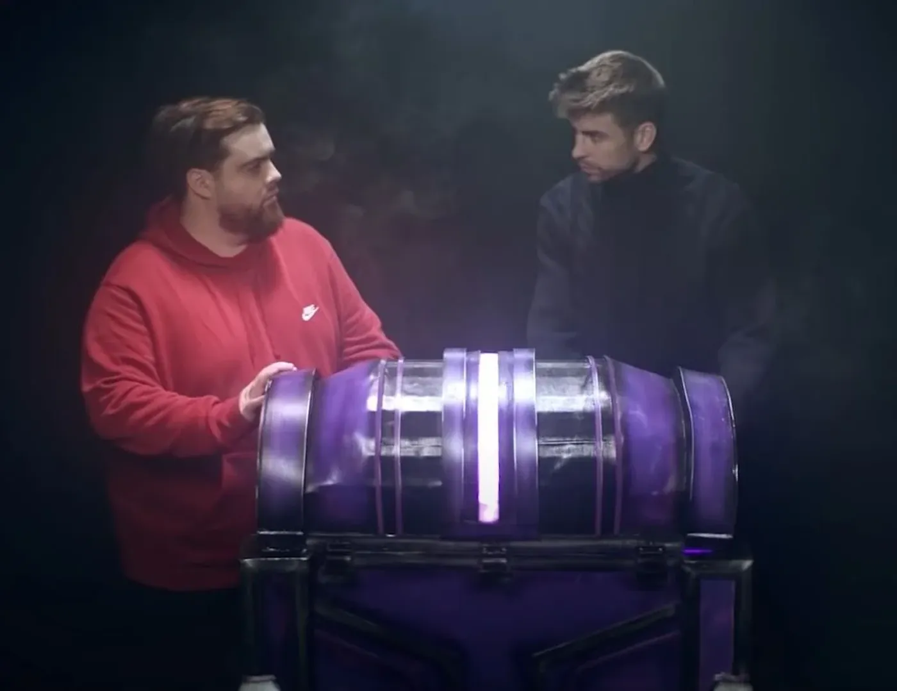

Vídeo de presentación de la plantilla de League of Legends del nuevo equipo KOI, con un tono épico pensado para causar impacto.
La presentación del equipo llenó el Palau Sant Jordi con 15.000 asistentes y alcanzó más de 350.000 espectadores en streaming.